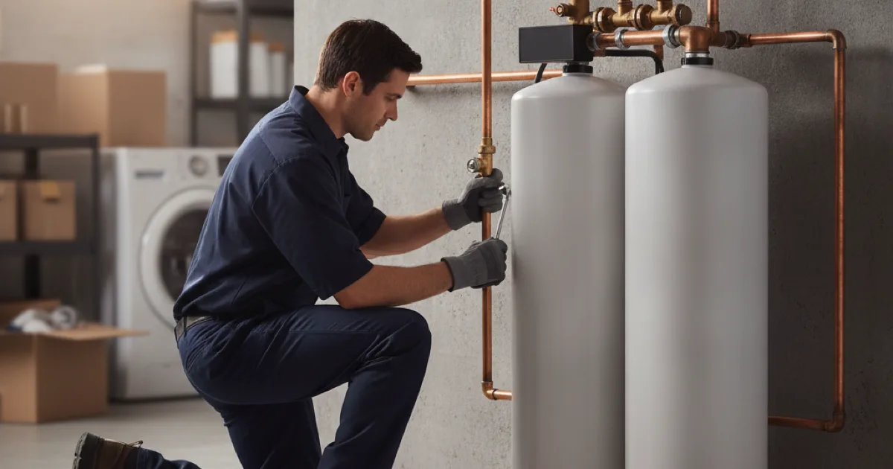

Water Treatment & Filtration in Westchester County, NY
Treating water you have not tested is guessing. We start with what is actually in your water — which differs sharply between municipal supply and a private well — then fit only what it needs.
- Licensed & Insured
- Upfront Pricing
- Clear Explanations Before Work Begins
- 15+ Years of Experience

Test before you treat
The water treatment industry has a reputation for selling systems nobody needs, and the antidote is simple: test the water first. A proper test tells you what is actually present — hardness, iron, pH, sediment, and on a well, potentially bacteria, nitrates, or other contaminants — and that determines what, if anything, is worth installing.
Without a test, you are buying a solution to a problem you have not confirmed you have. With one, you fit exactly what the water needs and nothing more. We would always rather start there than sell you a system on spec.
The EPA has clear guidance on testing private well water and what to test for, which is essential reading if you are on a well rather than municipal supply.
Hard water, or water you do not trust?
Let us find out what is in it before recommending anything.
Well water and city water are different problems
Which one you are on shapes everything, and in this county you find both, sometimes on neighbouring properties.
Municipal water is treated and tested before it reaches you, so it is safe to drink by regulation. What people usually want to address is aesthetic — hardness leaving scale and spots, a chlorine taste, or occasional sediment. These are comfort and appliance-longevity issues rather than safety ones.
Well water is your responsibility entirely. It is not treated or monitored by anyone unless you arrange it, and it can carry hardness, iron staining, sulphur smell, low pH that corrodes pipes, and on the safety side bacteria or nitrates. A well genuinely warrants periodic testing, and the right treatment depends entirely on what the test shows.
This is also why we treat a filtration system as part of a wider look at the plumbing rather than a bolt-on — low pH corroding pipes, for instance, is worth catching during a full system check first rather than treating in isolation.
What each system actually does
- Water softeners remove the calcium and magnesium that cause hardness — the scale on fixtures, the spots on glasses, and the reduced life of water heaters and appliances. The most common request in a hard-water area.
- Sediment filters catch sand, grit, and rust particles, protecting everything downstream. Often a first stage ahead of other treatment.
- Carbon filters improve taste and smell, notably removing chlorine taste from municipal water.
- Iron and sulphur systems address the staining and rotten-egg smell common on some wells.
- Neutralisers raise low pH so acidic water stops corroding copper pipe from the inside — a real cause of pinhole leaks on some wells.
- Reverse osmosis at the kitchen tap for drinking water, where the highest purity is wanted for cooking and drinking.
A whole-house system is plumbed in at the point the supply enters, with a bypass so the house still has water during servicing. What you need is whatever the test points to — often one or two of these, rarely all of them.
What affects the cost
The cost depends entirely on what the water test shows, because the right system is whatever the water actually needs — often one or two components, rarely all of them. We start from the test rather than a sales sheet.
A single under-sink filter is a small job; a whole-house softener or a multi-stage system plumbed in at the point the supply enters is larger. We size it to your household so salt and water use stay sensible, and price it before installing.
Keeping a system working
Treatment systems need a little upkeep to keep doing their job. Softeners need salt topped up and the occasional check; filters need cartridges changed on a schedule; a tankless-style unit needs its routine too.
We set out the maintenance for whatever we install so it keeps working rather than quietly failing. Neglected, a filter stops filtering and a softener stops softening — the system is only as good as the upkeep behind it.
Common questions
Do I really need to test first?
It is the difference between fitting what your water needs and buying a system on someone’s sales pitch. On a well it is genuinely important for safety; on municipal water it still tells you whether a softener or filter is worth it at all.
Is my hard water actually a problem?
It is not a health issue, but it scales up fixtures and shortens the life of water heaters and appliances. Whether a softener is worth it is a comfort-and-cost decision, and the hardness number from a test helps you make it.
Can acidic water really damage my pipes?
Yes. Low pH water slowly corrodes copper from the inside and is a genuine cause of pinhole leaks on some wells. A neutraliser fixes the cause rather than repeatedly patching the symptom.
Do softeners waste a lot of water and salt?
Modern demand-based softeners regenerate only when needed, using far less than older timer-based ones. Sizing it correctly for your household is what keeps salt and water use sensible.
How often does a system need servicing?
It varies by type — softeners need salt topped up and occasional checks, filters need cartridges changed on a schedule. We will set out the routine for whatever we install so it keeps working.
Treat what your water actually needs
Licensed, insured, and starting from a test rather than a sales sheet.